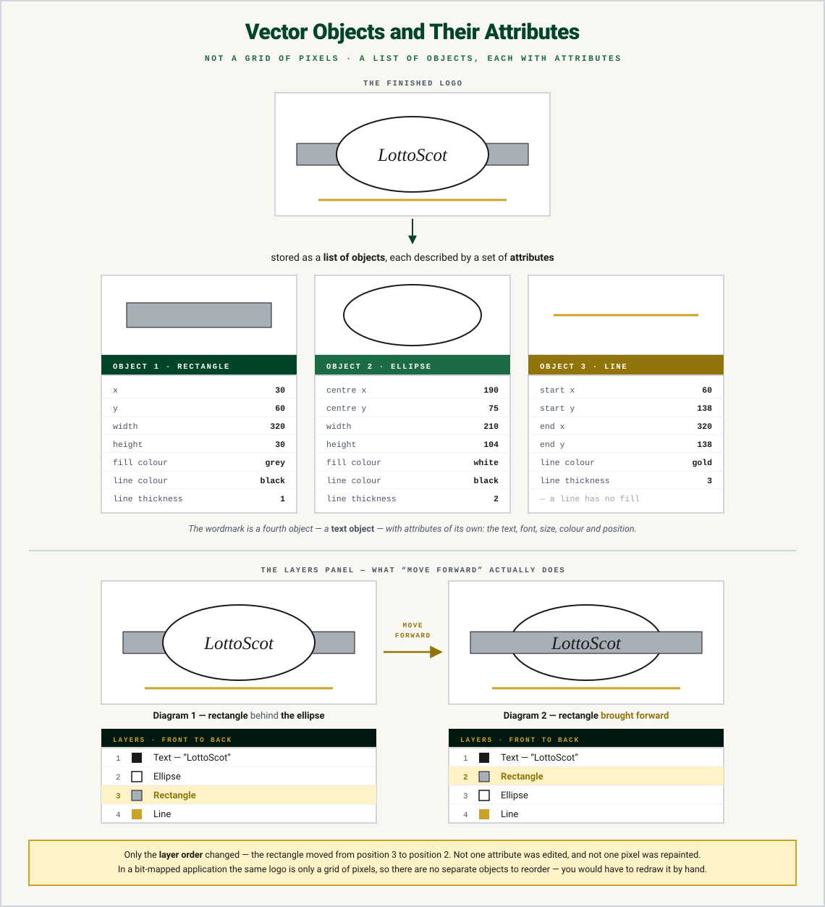

ASCII & Extended ASCII
Text is stored by giving each character a numeric value, which is then converted to binary. For example, capital A has an ASCII code of 65, which is stored as the binary number 01000001. The Space key is 32.
Extended ASCII uses 8 bits per character, giving 256 possible characters. There are two types:
- Printable characters — letters, numbers and symbols you can see on screen
- Control characters — signals without printed symbols, like escape and delete
Calculating storage
Space needed (in bits) = length of the message × 8 "Hello" → 5 × 8 = 40 bits = 40 ÷ 8 = 5 bytes
ASCII Explorer
Type any character (or pick from the table) to see its ASCII code and 8-bit binary pattern — watch how "A" and "a" differ.
Bitmap Graphics
A bitmap is a grid of pixels, and each pixel has a colour associated with it. In a black and white bitmap, a black pixel is stored as a 1 and a white pixel as a 0.
For colour images, the number of bits per pixel increases — up to 24-bit True Colour, where each pixel can be one of 16,777,216 colours.
Vector Graphics
A vector graphic isn't stored as pixels. Instead, the image is made up of shapes called objects, and each object is stored as a list of attributes. The four objects at National 5:
| Object | Attributes stored |
|---|---|
| Rectangle | co-ordinates (X and Y), fill colour, line colour |
| Ellipse (the name for an oval) | |
| Polygon | co-ordinates of each point, fill colour, line colour |
| Line | co-ordinates, line colour — no fill colour! |
For example, in an image containing a green circle, an orange-edged triangle and a blue line: the circle is an ellipse with fill colour green; the polygon has line colour orange; the line object has line colour blue — and all of the objects have X and Y co-ordinates.

Bitmap vs Vector — Scaling
Zoom in on the same picture stored both ways — watch the bitmap pixelate while the vector stays perfectly sharp.
Test Yourself
Calculate the number of bits needed to store the word "Computing" in extended ASCII, and convert your answer to bytes.
Marking Instructions
9 characters × 8 = 72 bits (1 mark) = 72 ÷ 8 = 9 bytes (1 mark).
Describe how a bit-mapped graphic is stored.
Marking Instructions
As a grid of pixels (1 mark); each pixel is assigned a colour stored as a binary value (1 mark).
A vector graphic contains an ellipse. State two attributes that would be stored for it.
Marking Instructions
Any two of: co-ordinates (X/Y position), fill colour, line colour. (1 mark each)